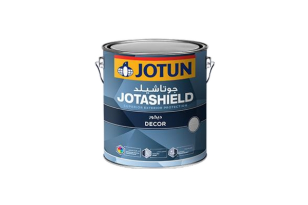
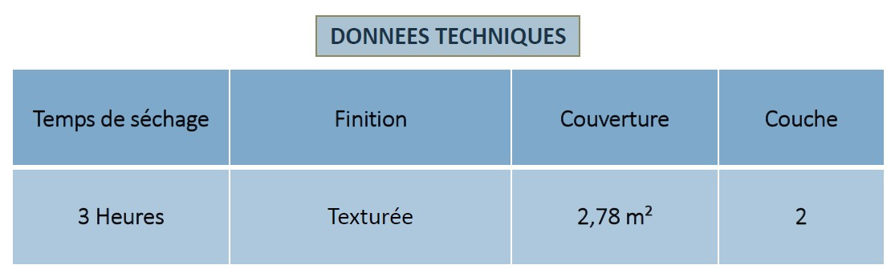

Une texture moyenne flexible - pure acrylique - qui donne un aspect moderne et couvre également les petites fissures de surface. Elle offre également une très bonne résistance aux intempéries et à l'eau avec une large gamme de couleurs durables.